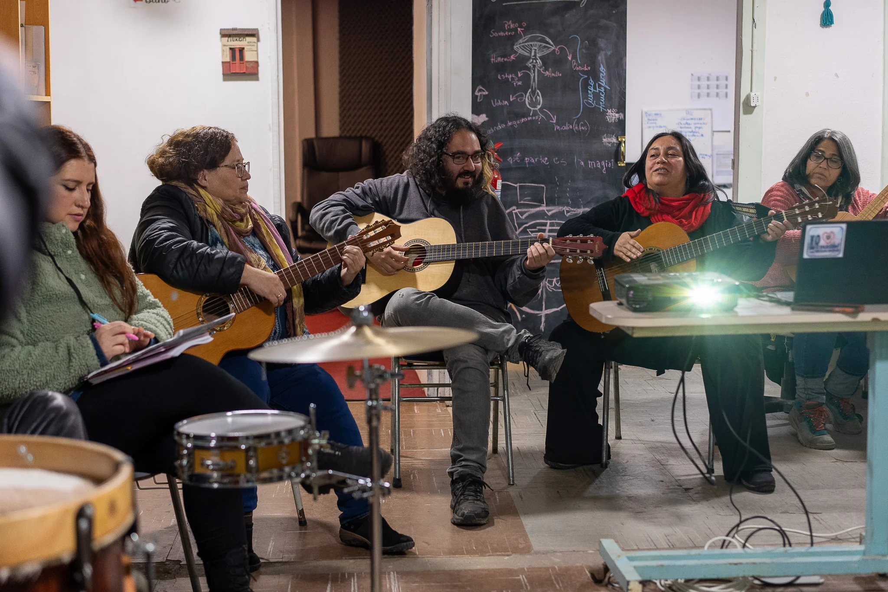

Aukan Archives
Aukan
-
Primer Encuentro Regional de Puntos de Cultura Comunitaria de O’Higgins 2025
El hito vivido el día sábado 31, refrenda el compromiso de los PCC de OHiggins por fortalecer el trabajo en…
-

Tercer Encuentro Regional de la Red de Puntos de Cultura Comunitaria de la región de O’Higgins
Presentar a los nuevos Puntos de Cultura Comunitaria validados recientemente y continuar con los avances de los dos proyectos de…
· AMP, Añañuca, Arte Libre, Audiovisualistas de Pichilemu, Aukan, Batuquebatu, Cambalache, Cedesus, Guanábana, Impronta, JJVV Lo Miranda, Kalfumalén, La Maquinaria, La Puerta, Línea Contínua, Noticias, Pacari, Promaucaes, Queltehue, Quetralmahue, Red, Ruedas de Larmahue, Semillas de Pueblo Chico, Teatro del Cerro, Teatro del Homenaje -

Cantata Décimas por la Memoria
“Décimas por la Memoria” es una expresión artística y comunitaria profundamente significativa, nacida del esfuerzo conjunto de pobladores, educadores y…
-

Cantata “Décimas por la Memoria” en conmemoración de los 51 años del golpe cívico-militar en Chile
El Centro Cultural para las Comunicaciones Aukan extiende invitación a la presentación de la cantata “Décimas por la Memoria”, en…
-

Un Territorio Digital para la Red de Puntos de Cultura Comunitaria de O’Higgins
El pasado día sábado 31 de agosto, en dependencias de la Universidad de O’Higgins, se llevó a cabo la segunda…